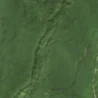
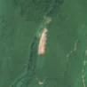

2,1 ha · Șendroaia, com. Groșii Țibleșului
văzută schimbată prima dată pe 20 mai 2026


Autorizația cea mai apropiată nu acoperă tăierea: schimbarea cade în afara parcelei autorizate.
APV 2400140302320 · Ocolul Silvic Groșii Țibleșului, valabilă 25 aug. 2025 – 31 oct. 2025, la 287 m
Ce se vede în poze: În «poza detaliată» din 2016, zona marcată este acoperită de coronamente dense de copaci. În «după», apare o fâșie deschisă, pal-maronie, fără copaci, ceea ce arată că pădurea a fost tăiată pe acea suprafață.